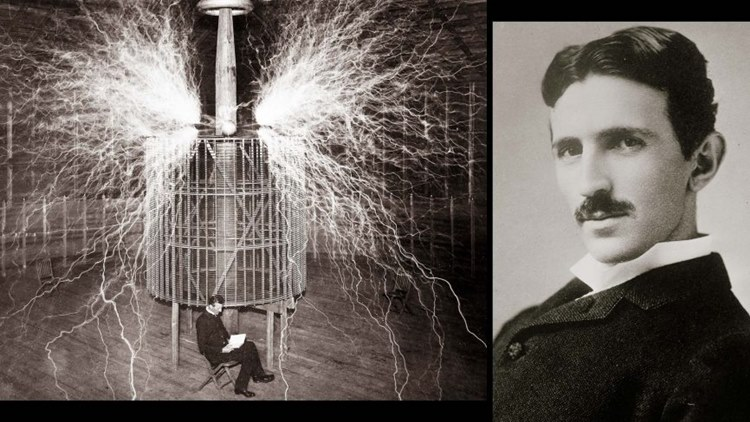

Dr. Nikola Tesla
Great Inventor and True Genius

Dr. Nikola Tesla in research facility in Colorado Springs.
Nikola Tesla's Life:
- 1856: Nikola Tesla is Born.
- 1875: Tesla Enrolls At Austrian Polytechnic.
- 1882: Nikola Tesla begins working for Continental Edison.
- 1882: Tesla Identifies Magnetic Induction Field Principle.
- 1884: Tesla arrives in the United States.
- 1885: Nikola Tesla quits working for Edison.
- 1886: Nikola Tesla forms Tesla Electric Light and Manufacturing Company.
- 1887: War of Currents era begins.
- 1887: In April, Nikola Tesla begins experimenting with X-Rays.
- 1888: Tesla Delivers Lecture: A New System of Alternating Current Motors and Transformers.
- 1891: Nikola Tesla Patents the Tesla Coil.
- 1891: In July, Nikola Tesla becomes a citizen of the United States.
- 1893: Nikola Tesla and George Westinghouse power the World's Columbian Exposition.
- 1899: Tesla moves to research facility in Colorado Springs.
- 1901: Construction begins on Tesla's Wardenclyffe Tower.
- 1913: Tesla Patents Bladeless Turbine.
- 1915: Tesla and Edison ignored by Nobel Prize committee.
- 1915: Tesla Files Lawsuit Against Guglielmo Marconi.
- 1934: The New York Times publicizes Nikola Tesla's particle Beam research.
- 1943: Nikola Tesla Dies.
“The scientists of today think deeply instead of clearly. One must be sane to think clearly, but one can think deeply and be quite insane.”
--Dr. Nikola Tesla